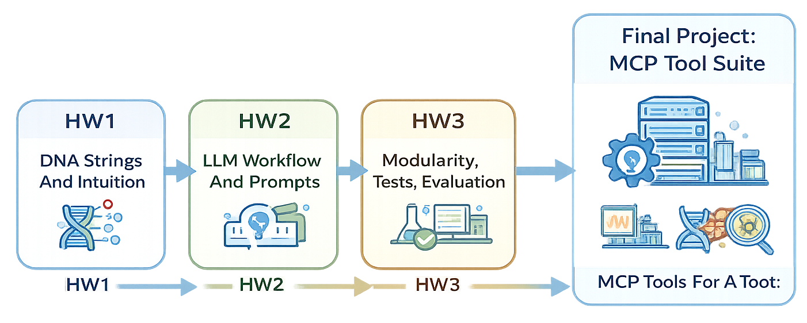
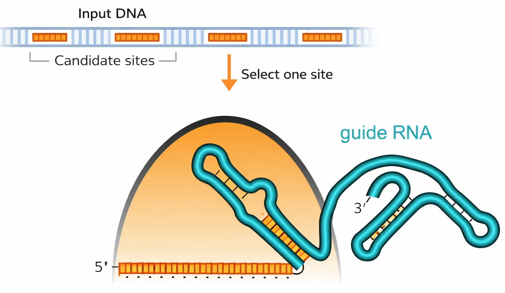
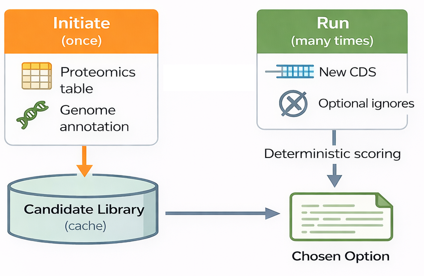
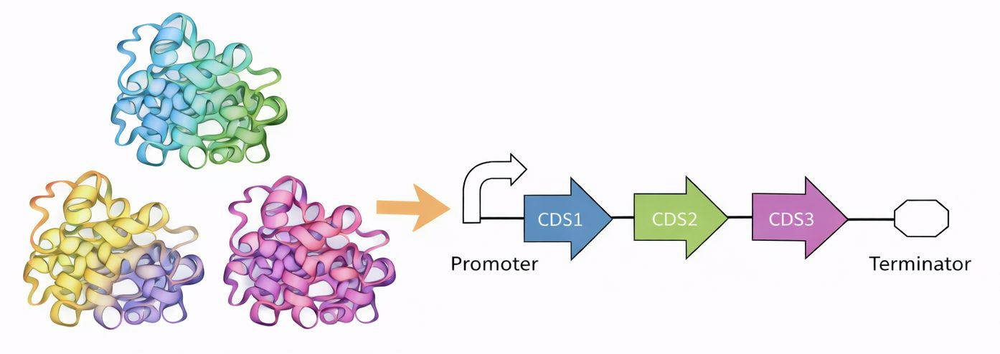

Here is where all of it is going. A user asks for something in a chat interface; the model routes the request to an MCP server; the server calls specialized synthetic biology toolkits — LabPlanner, CRISPR design, LCMS analysis, biosafety inspection. This semester builds toward a final project that is a substantial part of your grade: teams create an MCP tool suite for a synthetic biology topic of their choice, and demonstrate the end-to-end behaviour of the system, from chat request to tool results. Everything before it exists to make you capable of building one piece of that well.
A system diagram: a person types into a chat interface, a language model interprets the request and routes it to an MCP server, and the server calls specialized toolkits — LabPlanner, CRISPR design, LCMS analysis, biosafety inspection — returning results back up the chain.
The homeworks train the project

Three assignments, escalating deliberately. The first builds foundational skills by working with DNA as sequence strings, and develops intuition through hands-on sequence design. The second builds on that by encoding many biological constraints as testable predicates, and calibrating each one against real data. The third increases scope and realism: modular, multi-part code with testing and benchmarking, so you learn reliability, debugging and how to judge whether a solution actually works. By the end you are prepared to build something larger.
A progression diagram: three homework assignments feeding into the final project, each adding scope and new skills.
HW1 — guide RNA design

You will implement a guide RNA design function. Start with an input DNA sequence, identify candidate target sites, choose one using clear rules, and output the corresponding design. The goal is to practise turning biological constraints into code while building good habits: treat sequences as data, encode rules explicitly, write deterministic functions, keep the scope clean, fail loudly on invalid inputs. Then you will check your function against guides that have actually been built and shown to work in a published paper — because a function that runs is not the same as a function that is right.
The homework one workflow: an input DNA sequence, several candidate target sites marked on it, one site selected by rule, and the resulting guide RNA drawn as a stem-loop alongside its structured data.
HW2 — the checker suite

The second assignment is the one the rest of the course rests on. You will take six things that are known to make a gene fail to express — a restriction site that blocks fabrication, a hairpin over the start codon, an internal ribosome binding site, an internal promoter, rare codons, a homopolymer run — and turn each one into a predicate that returns true or false on a candidate design. The code for each is short. What is not short is deciding where the threshold goes, and defending it. Then you run the whole panel over the real E. coli proteome: if your checker rejects most of a genome that demonstrably expresses, your threshold is wrong, and you will find that out yourself rather than from me.
A function lifecycle diagram: an initiate step that runs once to load reference datasets and build a reusable library of options, and a run step that executes many times to score candidates for a new input and return a choice.
HW3 — designing a transcript

The third takes a set of target proteins and produces DNA that encodes them. By now you are holding checkers you built and calibrated yourself, so the design algorithm can use them to steer — which is the moment the point of the second assignment lands, because the algorithm and the test are finally sharing the same logic instead of each carrying its own copy. The focus is the engineering workflow as much as the biology: a multi-file project with a clear structure, unit tests for key behaviours, and a benchmark that evaluates performance at scale. The benchmark runs against a genome you have not seen.
Multiple protein targets on the left translated into a single construct design on the right: a promoter driving three coding sequences and a terminator.